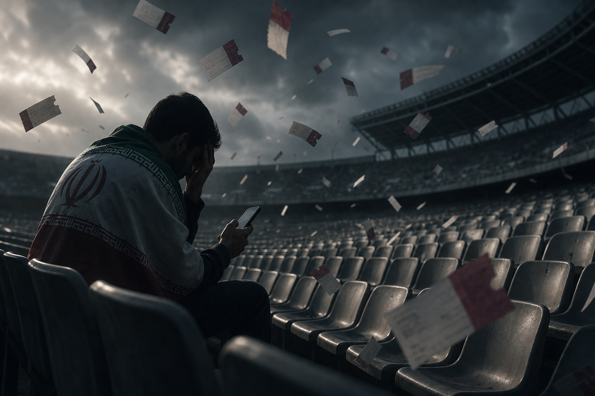
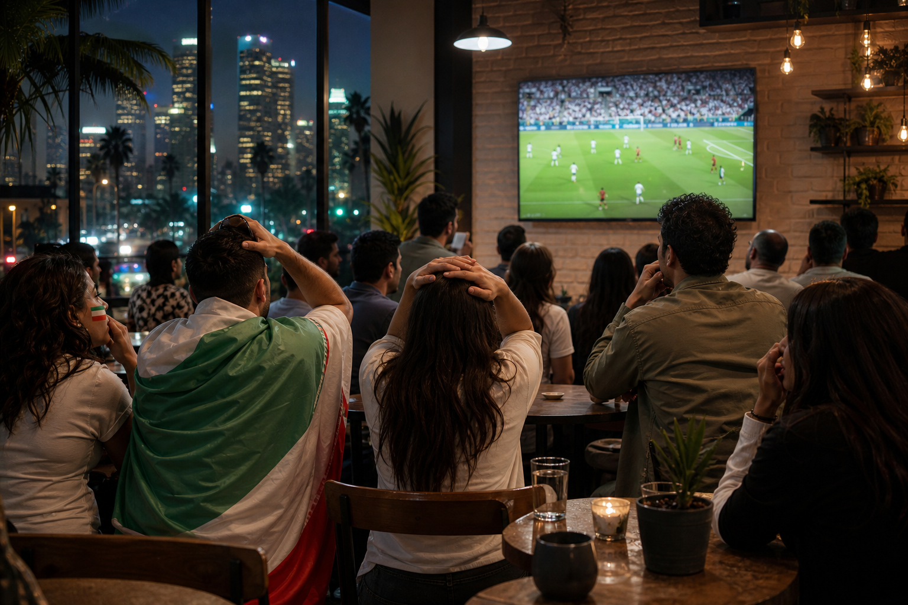

What happened
The timeline in plain facts
- May 2026 — Iran moves its World Cup training base from Tucson, Arizona to Tijuana, Mexico, citing US unwillingness to host the squad normally.
- Early June — FFIRI says about 15 backroom officials were denied US visas; players receive visas late, roughly ten days before the opener.
- Days before kickoff — federation says its 8% fan-ticket allocation per match was revoked after sales had already started.
- Visa conditions — team must enter the US on match days only for group games, not live continuously in the host nation like most squads.
Iran’s first match: 15 June vs New Zealand in the Los Angeles area — a city with one of the largest Iranian diaspora communities outside Iran. The football story and the politics story collide in the same stadium.

Why the bar goes quiet
What makes this bigger than one federation row
- OFAC / sanctions — US rules on transactions involving Iran can block how ticket money moves; FFIRI blames Washington, FIFA says it is seeking a compliant fix.
- Diaspora caught in the middle — families in LA who planned to cheer in person may be buying on the general market, not through the national pool.
- Not the only visa story — same tournament as Omar Artan denied at Miami, Iraqi staff held at Chicago, Swiss Embolo delayed.
- Football unprepared — domestic league paused since February; the squad arrives with rust and jet lag from a Tijuana base camp.
- World Cup as diplomacy — Iran reportedly gave FIFA a list of participation conditions; US officials drew lines on IRGC-linked entries.
Supporters ask a fair question: if the planet is invited, who is actually welcome — players, fans, or only the TV audience?

Life on the road
Tijuana training camp and matchday flights
Picture the routine: train in Mexico, sleep in Mexico, fly north for a few hours on matchday, play under US security rules, fly back. No leisurely base-camp barbecue. No families in the same hotel block for a month.
Tijuana is not a punishment — it is a workaround. But it is a symbol: the United States is co-host in name while the team’s daily life is pushed across a border. Media shuttle costs rise. Recovery windows shrink. The mental load is the story fans do not see on TV.
On the pitch, Iran still have talent and discipline. Off it, they have had the hardest commute in the tournament before a ball is kicked.
Fans push back
Who is on Iran’s side in the argument
Online and in diaspora media, sympathy leans toward the supporters and the players, not the bureaucracy. FFIRI accused the US of obstructing fans in stadiums; Iranian state media frame it as unfair targeting. Western outlets focus on sanctions law and security policy. Ordinary fans echo a simpler line: “We qualified. Let us play and let us watch.”
- Families who booked flights before the ticket reversal — stuck refreshing FIFA and fearing scams.
- Community groups in California organising watch parties if stadium plans collapse.
- Regional analysts linking Iran’s case to Artan’s — one World Cup, many border stories.
FIFA’s public line: working with FFIRI to “maximise opportunities” for Iranian supporters. That is not a guarantee; it is a promise still being tested in real time.
Who answers?
Washington, FIFA, and the empty chair
United States
- OFAC restrictions limit how Iranian ticket revenue can flow through US-linked systems.
- Visa policy remains case-by-case; officials say security law applies even during a “global celebration.”
- Secretary of State Marco Rubio has said players can come; IRGC-linked individuals may not.
FIFA
- Runs ticket allocation but depends on host governments for payments and entry.
- Has not publicly confronted Washington the way some fans want — same pattern as the Artan referee case.
- Could release revoked seats to general sale — ~5,600 for Iran–New Zealand alone per media estimates.
The uncomfortable picture: football’s showpiece hosted by a country whose immigration and sanctions rules can reshape the draw off the field. Iran are still in the tournament. Many of their fans might not be — and that is the hot take that will not age well if the seats stay empty.